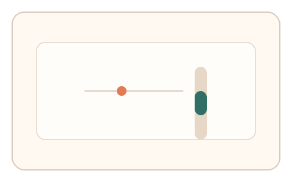
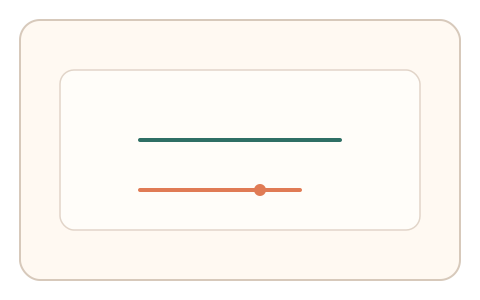
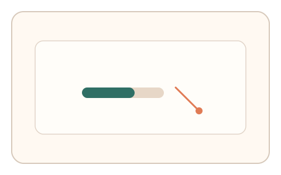

#149
F：意图/现实耦合 × 异步/随机插入（路径/预测误差）
已扩展
滚动‑指针耦合比
记录滚动与指针移动的耦合比例，异步要求同速率配对并与个体基线比对。
概念原文
记录用户滚动与指针移动的耦合比例，异步要求完成“同速率配对”的微任务，系统与个体基线比对。
用“跨通道耦合比例”识别真实操控。
研究背景
跨通道协同需要感知‑运动耦合与节奏控制，真实用户的滚动与指针联动比值具有稳定区间。通过再现任务可验证一致性。
核心机制
- 记录滚动速度与指针速度的自然比例。
- 异步插入同速率配对任务。
- 比较耦合比与相位延迟。
- 与个体基线和群体分布比对。
用户流程
- 步骤 1：用户进行滚动与指针操作。
- 步骤 2：系统提示同速率配对任务。
- 步骤 3：系统分析耦合比与延迟。
判定信号
滚动‑指针速度比
耦合比例反映真实协同控制。
相位延迟与微纠偏
真实用户存在稳定延迟与纠偏。
判定逻辑
耦合比与相位延迟需符合基线；过度恒定或失配判异常。
对抗面
- 脚本固定比值并同步驱动
- 重放真实耦合序列
防御与缓解
- 随机化目标比值与方向
- 加入短时扰动与反向段
- 结合停顿与反应时信号
可达性与风险
提供键盘滚动与简化模式，支持触控替代。
- 设备滚轮差异影响速度
- 触控设备难以统一比值
可视化状态

状态 1：耦合采集
记录滚动与指针联动。

状态 2：配对任务
要求同速率配对操作。

状态 3：比值判定
比较耦合比与延迟。
参考资料
Motor coordination
说明跨通道协同控制。
Human–computer interaction
说明人机交互中的协同行为。